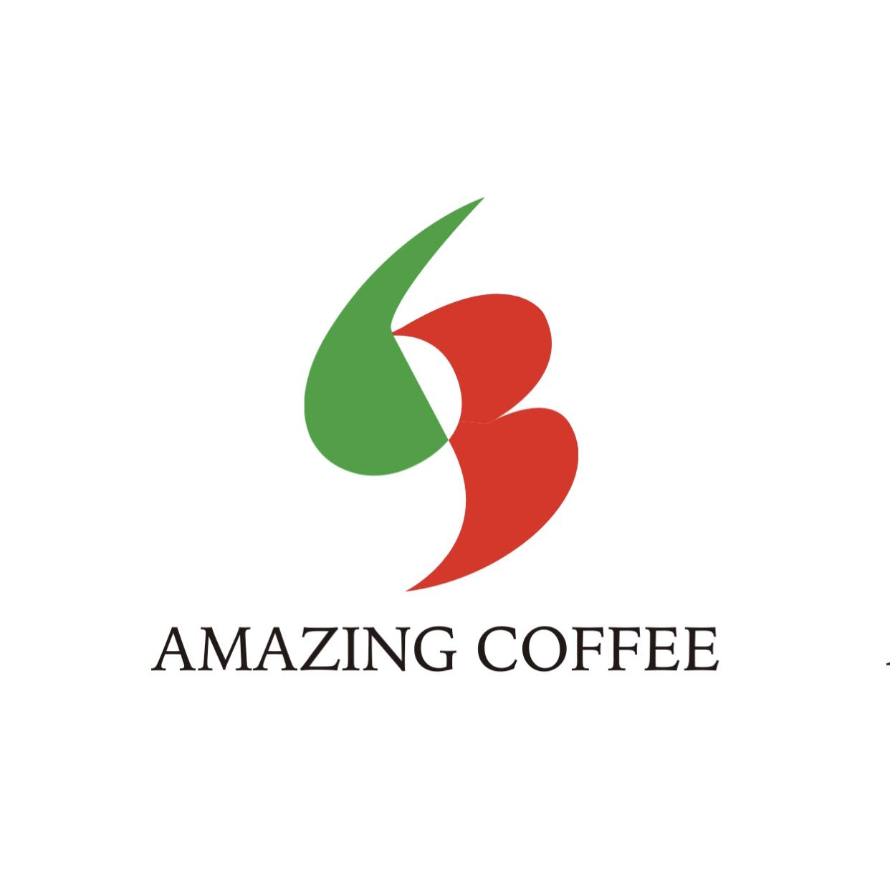
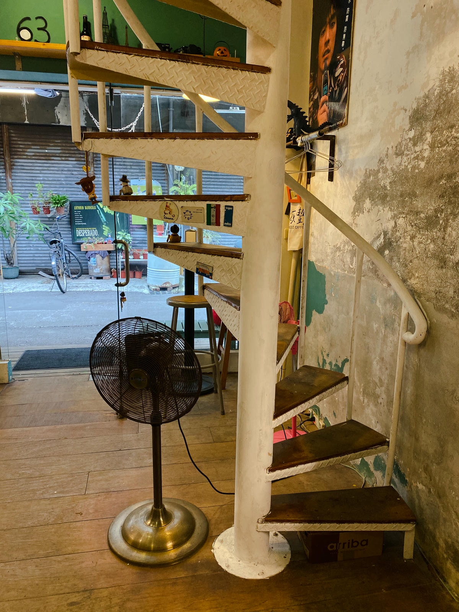

店家特色
Amazing 63以義大利咖啡為核心特色，強調專業技術與細節表現，並取得義大利認證資格，展現對咖啡品質的高度要求。店家不追求流行的網美風格，而是堅持自身風格與氛圍，將義大利咖啡文化融入台灣日常，形塑出獨特且具有深度的咖啡體驗。
｜一杯咖啡，堅持屬於自己的風味｜
Amazing 63以義大利咖啡為核心特色，強調專業技術與細節表現，並取得義大利認證資格，展現對咖啡品質的高度要求。店家不追求流行的網美風格，而是堅持自身風格與氛圍，將義大利咖啡文化融入台灣日常，形塑出獨特且具有深度的咖啡體驗。



店內的特色-旋轉樓梯